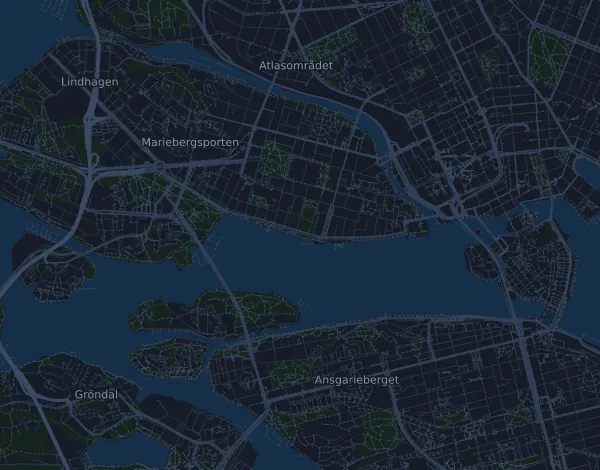

Stockholm Halvmaraton 21 km
- Distance
- 21 km
- Dénivelé positif
- ↑ 115 m
- Point culminant
- 25 m d’altitude
- Terrain
- Route
- Profil
- Plat
- Départ
- 15 h 30
- Ravitaillements
- 7
Profil d’altitude
Prépare-toi avec Mila
Mila est une app avec un coach de course à pied. Ajoute une course à ton plan : le coach planifie tes semaines jusqu’au départ selon ta forme, et te donne un pronostic de temps et un plan pour l’allure, l’hydratation et l’énergie sur le parcours.

La bonne séance. Le bon jour.
Le parcours

À propos du parcours
adidas Stockholm Halvmaraton est une course sur route de 21 km (Stockholm, Suède). Le parcours compte 115 m de dénivelé positif et 112 m de dénivelé négatif, soit 5,5 m par km : il est donc plat. Le point culminant est à 25 m d’altitude et le point le plus bas à -2 m.
Le parcours ne compte aucune montée continue de 25 m ou plus.
L’organisateur prévoit 7 ravitaillements, le premier au km 3,5 et le dernier au km 19,5.
Dans l’app Mila, le coach décrit le parcours en détail dans ta langue et planifie ton allure et ton ravitaillement.
Avant le départ
Ravitaillements
| Au | Ce qu’on y trouve |
|---|---|
| km 3,5 | eau |
| km 6,5 | eau, boisson énergétique |
| km 9,5 | eau, boisson énergétique |
| km 12,5 | eau, boisson énergétique |
| km 15,0 | eau, nourriture |
| km 17,0 | eau, boisson énergétique, nourriture |
| km 19,5 | eau, boisson énergétique, nourriture |
Heures de départ
- 15 h 30
Source : stockholmhalfmarathon.se, consulté le 15 octobre 2026
Tableau d’allures
Stockholm Halvmaraton 21 km en 1:30:00 – allure au km et temps de passage
4:17 min/km · km 5 : 21:25 · km 10 : 42:50 · km 15 : 1:04:15 · arrivée : 1:30:00
Stockholm Halvmaraton 21 km en 1:45:00 – allure au km et temps de passage
5:00 min/km · km 5 : 24:59 · km 10 : 49:59 · km 15 : 1:14:58 · arrivée : 1:45:00
Stockholm Halvmaraton 21 km en 2:00:00 – allure au km et temps de passage
5:43 min/km · km 5 : 28:33 · km 10 : 57:07 · km 15 : 1:25:40 · arrivée : 2:00:00
Stockholm Halvmaraton 21 km en 2:15:00 – allure au km et temps de passage
6:26 min/km · km 5 : 32:08 · km 10 : 1:04:15 · km 15 : 1:36:23 · arrivée : 2:15:00
Les temps supposent une allure régulière du début à la fin. C’est un simple calcul, pas un pronostic : dans les montées, dans la foule et aux ravitaillements, l’allure varie.
Questions fréquentes
Quand a lieu Stockholm Halvmaraton 21 km ?
Stockholm Halvmaraton 21 km a lieu le samedi 21 août 2027. Vérifie la date et l’heure de départ auprès de l’organisateur.
À quelle heure part Stockholm Halvmaraton 21 km ?
Selon l’organisateur : 15 h 30.
Stockholm Halvmaraton 21 km : quelle distance et quel dénivelé ?
La course fait 21 km, avec 115 m de dénivelé positif et 112 m de dénivelé négatif. Le point culminant est à 25 m d’altitude.
Stockholm Halvmaraton 21 km : à quoi ressemble le parcours ?
Le parcours est plat, avec 5,5 m de dénivelé par km en moyenne. Il ne compte aucune montée continue de 25 m ou plus. Le départ et l’arrivée sont au même endroit. On y court sur route.
Stockholm Halvmaraton 21 km : y a-t-il des ravitaillements ?
Oui. L’organisateur prévoit 7 ravitaillements : km 3,5 (eau) ; km 6,5 (eau, boisson énergétique) ; km 9,5 (eau, boisson énergétique) ; km 12,5 (eau, boisson énergétique) ; km 15,0 (eau, nourriture) ; km 17,0 (eau, boisson énergétique, nourriture) ; km 19,5 (eau, boisson énergétique, nourriture).
Stockholm Halvmaraton 21 km : comment gérer mon allure ?
Vise un effort régulier du début à la fin, et retiens-toi sur les premiers kilomètres, quand les jambes sont fraîches et que le peloton part vite. Le parcours est plat, une allure régulière au kilomètre convient donc bien. Dans Mila, tu obtiens un plan d’allure pour ce parcours, adapté à ta forme.
D’autres courses de ce type
Autres courses à proximité
- Fjällmaraton Sälen 42 km21 août 2027 · Sälen (Lindvallen, Experiumtorget), Suède
- Midnattsloppet Göteborg 10 km21 août 2027 · Göteborg, Suède
- Trailvasan 3021 août 2027 · Oxberg, Suède
- Ultravasan 45 43,8 km21 août 2027 · Oxberg, Suède
- Ultravasan 90 91,7 km21 août 2027 · Sälen (Berga by), Suède
- Midnattsloppet Malmö 10 km28 août 2027 · Malmö, Suède
Prépare-toi avec Mila
La bonne séance. Le bon jour.
Les informations proviennent du fichier du parcours et de l’organisateur. Vérifie la date, les heures de départ et le règlement auprès de l’organisateur.
Mila n’est ni affiliée à l’organisateur ou aux sponsors de la course, ni sponsorisée ou approuvée par eux. Les noms et les marques appartiennent à leurs propriétaires. Organisateur ou ayant droit ? Demander une modification ou un retrait